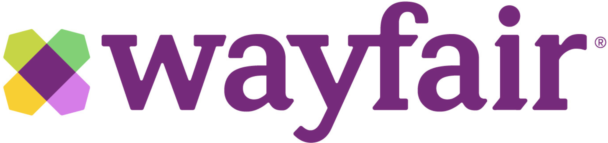

Professional Experience

Manager, Data Integrity
September 2019 - Present
- Led a cross-functional team of business users, data scientists, and computer engineers to improve supply chain data quality and visibility with saving valued at $10 million annually.
- Reduced manual effort required in inventory planning process by 90%, and allowed 3 full-time employees to be redeployed, by closing the gap between the inventory planning system and product catalog data.
- Improved team organization by developing a process to track projects requirements, tasks, manage deadlines, and monitor KPIs.
Senior Data Analyst, Data Governance
July 2018 - September 2019
- Gathered and aligned requirements from 8 business stakeholder teams to create a single source-of-truth for supply chain data storage and access with an annualized saving of $4 million.
- Decreased shipping cost variance by 54% by building a feedback loop to capture, store, and use carrier invoice data to inform future order shipping cost estimates.
- Developed process documentation and data definitions to ensure all metrics and KPIs easily measured and accessed by stakeholders.

Data Analyst II, Operations
January 2016 - July 2019
- Built work order scheduling SQL database to reduce the amount of manual data gathering required for work order creation. Reduced daily scheduling time from 24 hours to 6 hours.
- Led a project reducing packaging inventory by 95% by working with suppliers to set up a just-in-time delivery system. A daily report was created to show packaging requirements for the following day’s production.
- Decreased average work order lead time by 3 day while decreasing inventory by 10% through an automated model that used historical demand to plan safety stock levels.
- Conducted training sessions for Value Stream Mapping, Transactional Process Improvement, 6S, 8D Problem Solving, and Risk Residual Reduction (R3) programs